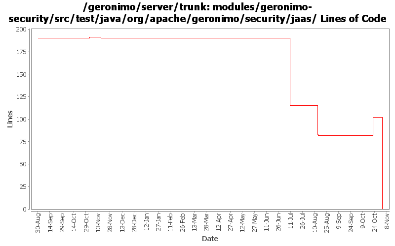

[root]/modules/geronimo-security/src/test/java/org/apache/geronimo/security/jaas

| Author | Changes | Lines of Code | Lines per Change |
|---|---|---|---|
| Totals | 53 (100.0%) | 168 (100.0%) | 3.1 |
| djencks | 14 (26.4%) | 134 (79.8%) | 9.5 |
| vamsic007 | 7 (13.2%) | 22 (13.1%) | 3.1 |
| kevan | 14 (26.4%) | 6 (3.6%) | 0.4 |
| jlaskowski | 1 (1.9%) | 6 (3.6%) | 6.0 |
| prasad | 13 (24.5%) | 0 (0.0%) | 0.0 |
| jdillon | 2 (3.8%) | 0 (0.0%) | 0.0 |
| adc | 2 (3.8%) | 0 (0.0%) | 0.0 |
GERONIMO-3565. Modules distributed amongst framework/modules and plugins
0 lines of code changed in 13 files:
**GERONIMO-3575 Review CertificatePropertiesFileLoginModule
o LoginModule should not add principals when login fails. Added a test to detect if it does.
o Other changes to bring CertificatePropertiesFileLoginModule in line with http://java.sun.com/j2se/1.5.0/docs/guide/security/jaas/JAASLMDevGuide.html
**: This fix can use a thorough review.
0 lines of code changed in 1 file:
GERONIMO-3575 Review CertificatePropertiesFileLoginModule
o Added tests to check normal login and bad logins
0 lines of code changed in 1 file:
**GERONIMO-3571 Review PropertiesFileLoginModule
o LoginModule should not add principals when login fails. Added a test to detect the same.
o Other changes to bring PropertiesFileLoginModule in line with http://java.sun.com/j2se/1.5.0/docs/guide/security/jaas/JAASLMDevGuide.html
**: This fix can use a thorough review.
0 lines of code changed in 1 file:
**GERONIMO-3570 Review SQLLoginModule
o LoginModule should not add principals when login fails. Added a test to detect the same.
o Other changes to bring SQLLoginModule in line with http://java.sun.com/j2se/1.5.0/docs/guide/security/jaas/JAASLMDevGuide.html
**: This fix can use a thorough review.
0 lines of code changed in 2 files:
**GERONIMO-3543 SQLLoginModule successfully authenticates non-existent users
o Fixed the LoginModule to throw FailedLoginException for non-existent user
o Added a test to detect regression
**: This commit can use a thorough review.
20 lines of code changed in 1 file:
Fix error message in the test case.
2 lines of code changed in 1 file:
GERONIMO-3407 cleanup
0 lines of code changed in 1 file:
GERONIMO-3407 stop using SubjectRegistrationLoginModule
16 lines of code changed in 5 files:
GERONIMO-3388 Likely fix of LoginKerberosTest in case kerberos is actually installed
3 lines of code changed in 1 file:
GERONIMO-3303 Major simplification of authentication framework. Removes remote login and supporting code
115 lines of code changed in 7 files:
GERONIMO-2537 Update the src headers in server/trunk/modules to be compliant with the new ASF src header and copyright policy (http://www.apache.org/legal/src-headers.html). I also did some cleanup of the src headers and tried to make them all a consistent format
6 lines of code changed in 14 files:
Partial fix for GERONIMO-2537 All Geronimo source files must be brought in line with the new ASF source header and copyright notice policy
The modules directory is supposed to be migrated. There're some issues with some files, but they'll be handled manually
6 lines of code changed in 1 file:
GERONIMO-1432 DirectConfigurationEntry should not wrap principals
0 lines of code changed in 2 files:
(GERONIMO-2211) Root target/login-audit.log to BASEDIR
Drop custom log4j setup
0 lines of code changed in 2 files: